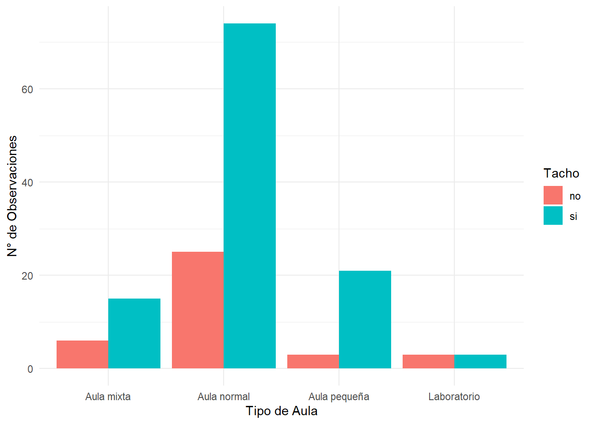

Estado de las aulas de UTEC fuera del horario de clases
Introducción
Relevancia
Los ambientes con los que cuenta UTEC para que sus alumnos estudien ya sea de manera grupal o individual no siempre satisface el número de estudiantes que se encuentran fuera de clases. Es por ello que algunos optan por aulas desocupadas. Estas a pesar de no estar en uso deben de cumplir con un buen estado para que los alumnos tengan un ambiente agradable.
Objetivos
Verificar que la limpieza de las aulas de la Universidad de Ingeniería y Tecnología, cumplan con el aforo permitido y presenten un buen proceso de saneamiento.
Comprender la relación que existe entre los alumnos de UTEC y el estado de las aulas fuera de clases
Brindar información a la comunidad universitaria y servicio de limpieza de la Universidad de Ingeniería y Tecnología, con el fin de mejorar la planificación y mantenimiento de limpieza de las aulas de UTEC.
Contexto
Las universidades deben garantizar un entorno limpio y ordenado en sus aulas para brindar a sus estudiantes un ambiente adecuado durante sus clases. La Universidad de Ingeniería y Tecnología (UTEC), ubicada en el distrito de Barranco, cuenta con una población estudiantil de aproximadamente 4000 estudiantes tanto de pre-grado como de postgrado. Actualmente, la universidad tiene un horario de limpieza establecido para cada aula. Sin embargo,sería beneficioso reorganizar el horario de limpieza considerando las aulas más frecuentadas por los estudiantes, de manera que estén en óptimas condiciones fuera del horario de clases, ya que algunos estudiantes utilizan estos espacios para estudiar durante sus horas libres o llevar a cabo otras actividades. El presente estudio se centra en analizar la relación entre los alumnos de UTEC y el estado de las aulas fuera de clases, así como la influencia de los estudiantes que utilizan las aulas para estudiar en el estado general de las mismas. La información obtenida será utilizada para informar y mejorar el proceso de limpieza y mantenimiento de las aulas en la Universidad de Ingeniería y Tecnología
Población, Muestra y Muestreo
Población: Diferentes espacios a los que los alumnos tienen acceso de la Universidad de Ingeniería y Tecnología en el ciclo 2023-1.
Muestra: Diferentes tipos de aulas.
Tamaño de muestra: 150 muestras de aulas registradas en el periodo 2023-1 en la Universidad de Ingeniería y Tecnológica.
Tipo de recolección de datos: Tipo experimental, específicamente monitoreo de las aulas de UTEC.
Proceso de recolección
Accedimos a las aulas que no estaban reservadas para actividades especificas, como reuniones, asesorías, clases entre otras. A distintas horas y distintas fechas. Mediante la observación anotamos los datos que requeríamos. Además también usamos la información que nos brindan las cartillas y los horarios que se encuentran en cada aula.
Librerías
library(readr)
library(dplyr)
library(esquisse)
library(ggplot2)Funciones
Redondeo
r <- function(x){
return(round(x, digits = 2))
}Covarianza
cv <- function(x, ...){
return(sd(x, ...)/mean(x, ...))
}Base de datos
Carga de datos
Usamos la librería readr en la cual tenemos acceso a la función read_csv() la cual usaremos para cargar nuestros datos a la variable Data:
DF <- read_csv("BDPRO.csv")Rows: 150 Columns: 16
-- Column specification --------------------------------------------------------
Delimiter: ","
chr (8): Aula, Tipo, Fecha, Ordenado, Aforo, Pizarra, Tacho, UltimaLimpieza
dbl (8): Piso, Hora, Limpio, Dispositivos, Alumnos, Ventanas, UltimaClase, S...
i Use `spec()` to retrieve the full column specification for this data.
i Specify the column types or set `show_col_types = FALSE` to quiet this message.Datos faltantes
sum(is.na(DF))[1] 0Variables
Contamos con 9 categóricas y 5 numéricas y 2 fechas
spec(DF)cols(
Aula = col_character(),
Tipo = col_character(),
Piso = col_double(),
Hora = col_double(),
Fecha = col_character(),
Limpio = col_double(),
Ordenado = col_character(),
Aforo = col_character(),
Dispositivos = col_double(),
Pizarra = col_character(),
Alumnos = col_double(),
Ventanas = col_double(),
Tacho = col_character(),
UltimaClase = col_double(),
UltimaLimpieza = col_character(),
SiguienteClase = col_double()
)| Variable | Tipo | Restricción |
|---|---|---|
| Aula | Categórica nominal | Codificación que asigna UTEC a sus aulas |
| Tipo | Categórica nominal | Aula normal, Aula pequeña, Laboratorio o Aula mixta |
| Piso | Numérica discreta | [1,10] |
| Hora | Numérica discreta | [7,22] |
| Fecha | Fecha | A partir de 24/04 |
| Limpio | Categórica ordinal | Del 1 al 5 |
| Ordenado | Categórica nominal | Si o no |
| Aforo | Categórica nominal | Si o no |
| Dispositivos | Numérica discreta | [0,5] |
| Pizarra | Categórica nominal | Si o no |
| Alumnos | Numérica discreta | Entero mayor o igual a 0 |
| Ventanas | Numérica discreta | Entero mayor o igual a 0 |
| Tacho | Categórica nominal | Si o no |
| Ultima clase | Numérica discreta | Entero positivo |
| Ultima limpieza | Fecha | A partir de 17/04 |
| Siguiente clase | Numérica discreta | Entero positivo |
Renombrar variables
Ahora que todas las variables están correctamente definidas. Renombraremos unas cuentas para facilitar su uso al momento de programar.
DF %>% rename(Uclase = UltimaClase) -> DF
DF %>% rename(ULimpieza = UltimaLimpieza) -> DF
DF %>% rename(Sclase = SiguienteClase) -> DF
DF %>% rename(Disp = Dispositivos) -> DF
DF %>% rename(Ord = Ordenado) -> DFRecategorización de variables
Debido a que la variable Limpio es una escala de satisfacción del 1 al 5 R lo toma como numérica, por lo que la recategorizaremos a categórica.
Además a las variables Fecha y ULipieza las definiremos de tipo fecha
DF$Limpio <- as.character(DF$Limpio)
DF$Fecha <- as.Date(DF$Fecha, "%d/%m/%Y")
DF$ULimpieza <- as.Date(DF$ULimpieza, "%d/%m/%Y")Por lo que nuestra base de datos luciría así
head(DF)# A tibble: 6 x 16
Aula Tipo Piso Hora Fecha Limpio Ord Aforo Disp Pizarra Alumnos
<chr> <chr> <dbl> <dbl> <date> <chr> <chr> <chr> <dbl> <chr> <dbl>
1 A804 Aula mi~ 8 16 2023-04-25 4 No Si 2 Si 8
2 A401 Aula pe~ 4 15 2023-04-25 4 No No 0 Si 12
3 M601 Laborat~ 6 15 2023-04-25 5 Si Si 10 Si 0
4 M602 Laborat~ 6 15 2023-04-25 4 No Si 13 No 4
5 A602 Aula pe~ 6 15 2023-04-25 4 No Si 3 No 0
6 A707 Aula no~ 7 15 2023-04-25 2 No No 3 Si 19
# i 5 more variables: Ventanas <dbl>, Tacho <chr>, Uclase <dbl>,
# ULimpieza <date>, Sclase <dbl>Análisis Descriptivo
Univariado
Piso
Descriptores numéricos
Dado el promedio y la mediana de esta variable podemos observar un sesgo hacia izquierda debido a que el promedio < mediana
r(mean(DF$Piso))[1] 6.45median(DF$Piso)[1] 7Además al tener un coeficiente de variación mayor a 0.3 nos interesa usar la mediana para ubicar los datos
r(cv(DF$Piso))[1] 0.41Es decir, esperaríamos que los datos se encuentren al rededor de 7 con un sesgo hacia la izquierda lo cual podremos observar mejor con un gráfico de barras
Gráficos
Ahora usando un diagrama de caja observamos la presencia de datos atípicos. Sin embargo, esto no escapa de nuestros margenes ya que entra dentro de los valores que delimitamos anteriormente.
La explicación del porque el 50% de nuestros datos se encuentran entre el piso 6 y 9 es porque justamente estos pisos son los que cuentan con más aulas. a diferencia de los pisos inferiores exceptuando por el piso 1 que a pesar de solo contar con 2 aulas, tiene una gran cantidad de observaciones fueron tomadas en ese piso.
quantile(DF$Piso) 0% 25% 50% 75% 100%
1 6 7 9 10 Hora
Descriptores numéricos
En esta variable a diferencia de la anterior observamos que la diferencia entre el promedio y la mediana es mínima. Esto se podría interpretar como una mejor distribución de los datos.
r(mean(DF$Hora))[1] 14.69median(DF$Hora)[1] 15En este caso el coeficiente de variación es menor que 0.3 por lo que el promedio sera quien determine la distribución de los datos
r(cv(DF$Hora))[1] 0.2Gráficos
0% 25% 50% 75% 100%
9 13 15 17 21 Según el diagrama de caja podemos observar que la mayor parte de nuestros datos se encuentran entre las 13 y 17 horas. Además de no tener datos atípicos y mostrar una buena distribución de los datos en la variable.
Ahora si ubicamos la información en un gráfico de barras, contemplamos la existencia de 2 modas como habíamos mencionado anteriormente. Las cuales vendrían a ser las 13 y 15 horas. Interpretando estos datos junto con la gráfica, concluimos que es mas probable encontrar un salón desocupado a las 13 y entre las 15 y 17 horas.

Dispositivos
Gráficos
Para esta variable nos gustaría empezar observando su diagrama de caja, ya que en el transcurso del experimento notamos que cierta cantidad de datos tomarían un valor atípico
A pesar de contar con datos atípicos nos damos cuenta que el promedio y la mediana no distan mucho entre si
Descriptores numéricos
r(mean(DF$Disp))[1] 2.91median(DF$Disp)[1] 3El motivo de la existencia de estos datos es que en el piso 6 se encuentran los laboratorios los cuales cuentan con computadoras para la finalidad de este tipo de aula. Sin embargo, el acceso a estas aulas no es igual a las demás. Ya que, las puertas solo se abren con el acceso del profesor por lo que ingresar a estas en horarios fuera de clase es casi imposible. Pero a pesar de esto logramos encontrar unos cuantos. Es por ello que tomamos la decisión de convertirlos en NAs ya que ademas de causar ruido visual en la gráfica, para fines de nuestro estudio escapan de nuestra muestra.

Descartados los datos atípicos nos damos cuenta que la cantidad de 3 dispositivos predomina sobre los demás. Es decir, que si tu ingresas a una aula desocupada lo mas probable es que encuentres 3 dispositivos encendidos, aunque nuestra data nos limita a la cantidad y no podemos especificarla. Al momento de tomar los datos podemos afirmar que en su mayoría serán las luces, el monitor y CPU del profesor.
Alumnos
Descriptores numéricos
Es notable que el coeficiente de variación es alto, esto nos da a entender que tiene una distribución muy dispersa, lo que podría significar un sesgo.
r(cv(DF$Alumnos))[1] 0.92Para corroborar esto nos fijaremos en el promedio y la mediana. Debido a que el promedio > mediana , esperaremos ver un sesgo a la derecha en el histograma
r(mean(DF$Alumnos))[1] 6median(DF$Alumnos)[1] 5Gráficos
Consideramos que un diagrama de caja es lo ideal para mostrar esta variable, debido a que podemos ubicar de mejor manera los datos. Concluyendo que a pesar que los datos se encuentran al rededor de 5 alumnos. Un 25% de las veces que se tomaron los datos las aulas se encontraban vacías. Por lo que Podemos encontrar de 1 hasta 9 alumnos en un salón. Sin embargo también es muy probable de que el aula este vacía.
quantile(DF$Alumnos) 0% 25% 50% 75% 100%
0.00 1.00 5.00 9.75 24.00 
Ventanas
Al estar el coeficiente de variación aproximado a 0.5 sabemos que esta variable estará medianamente dispersa y que debemos usar la mediana para la ubicación de los datos. La cual tiene un valor de 2 esto es un dato que se veía venia a medida que se realizaba el experimento ya que la mayoría de salones tienen solo 3 ventanas. Por lo que es un valor esperado.
[1] 0.53[1] 2Bivariado
Tipos de aula ~ Aforo
De acuerdo al gráfico presentado, se muestra la distribución de los diferentes tipos de aulas en UTEC en relación con su capacidad de aforo. Este análisis estadístico nos permite observar la proporción de aulas que cumplen con el aforo establecido.
Los resultados revelan que las aulas mixtas de UTEC son las que mejor cumplen con el aforo establecido, mostrando una proporción significativa de aulas que respetan dicha capacidad. Por otro lado, la mayoría de las aulas normales también cumplen con el aforo, aunque se observa que más de la mitad de los registros correspondientes a estas aulas indican que no se cumple el aforo permitido. Por último, se destaca que las aulas pequeñas son el tipo de aula en el cual no se cumple el aforo establecido.
Estos hallazgos evidencian la importancia de monitorear y garantizar el cumplimiento del aforo en las aulas, especialmente en aquellas de menor capacidad, a fin de asegurar un ambiente adecuado y seguro para los estudiantes y el personal académico.
Tipo de aula ~ Limpio
De acuerdo al gráfico presentado, se muestra la clasificación de los diferentes tipos de aulas en UTEC en cuanto a su nivel de limpieza, en una escala del 0 al 5. Este análisis estadístico nos permite evaluar la calidad de la limpieza en las aulas.
Los resultados revelan que las aulas mixtas tienden a presentar una buena clasificación en términos de limpieza. La mayoría de los registros muestran una calificación de 4 o 5 en la escala, lo cual indica un nivel alto de limpieza en estas aulas.
En cuanto a las aulas normales, al ser las más frecuentes en los registros, se observa una variedad de calificaciones. Sin embargo, destacan las calificaciones de 3, 4 y 5, lo cual indica que hay aulas con diferentes niveles de limpieza, pero en general se mantiene un estándar aceptable y casi perfecto.
Por otro lado, las aulas pequeñas presentan una mayor cantidad de registros con una calificación de 5 en limpieza, lo cual indica que estas aulas suelen estar más limpias en comparación con los otros tipos de aulas.
En el caso de los laboratorios, se observa una distribución más equilibrada en las calificaciones, sin destacar calificaciones extremas. Predominan las calificaciones de 3 y 4, lo cual indica que la limpieza en los laboratorios se mantiene en un nivel aceptable, sin tener una gran cantidad de aulas sucias ni completamente limpias.
Estos resultados resaltan la importancia de mantener un adecuado nivel de limpieza en todas las aulas de UTEC, garantizando un ambiente saludable y propicio para el aprendizaje. Asimismo, sugieren que se deben reforzar las medidas de limpieza en aquellos tipos de aulas que presentan calificaciones más bajas en el nivel de limpieza.
Tipo de aula ~ Orden
De acuerdo a los tipos de aulas que tenemos (aulas mixtas, normales, pequeñas y laboratorios), el gráfico nos muestra la cantidad de registros que presentan cada tipo de aula, así como su estado de orden o desorden.
Comenzando por las aulas mixtas, según los registros analizados, se observa que estas aulas tienden a presentar un nivel de desorden ligeramente mayor en comparación al nivel de orden. Aunque la diferencia entre aulas mixtas ordenadas y desordenadas no es considerable, es significativa y merece ser tomada en cuenta.
En cuanto a las aulas normales, se aprecia que en su mayoría están en un estado de orden, sin embargo, al igual que en el caso de las aulas mixtas, la diferencia entre orden y desorden no es significativa. Esto indica que, en general, las aulas normales presentan un nivel aceptable de orden.
Por otro lado, las aulas pequeñas muestran una tendencia hacia un mayor desorden en comparación al estado de orden. Según los registros analizados, la mayoría de las aulas pequeñas se encuentran en un estado de desorden. Es importante prestar atención a este hallazgo y considerar medidas para mejorar el orden en estas aulas.
Por último, los laboratorios se destacan como el tipo de aula con un mayor nivel de orden en base a las muestras registradas. En su mayoría, los laboratorios presentan un estado de orden, lo cual refleja un ambiente propicio para el desarrollo de actividades académicas.
Estos resultados estadísticos nos brindan información valiosa sobre el estado de orden y desorden en cada tipo de aula. Con base en estos datos, se pueden tomar decisiones y acciones dirigidas a mejorar el orden en aquellos tipos de aulas que presenten un mayor nivel de desorden. El mantenimiento de un entorno ordenado en las aulas contribuye a un mejor desarrollo del proceso de enseñanza y aprendizaje.
Tipo de aula ~ Tacho

De acuerdo al gráfico presentado sobre la relación entre los tipos de aulas de UTEC y el estado de limpieza de los tachos, se observa lo siguiente:
Las aulas mixtas, normales y pequeñas muestran en su mayoría tachos limpios, lo cual indica que se está cumpliendo con la tarea de mantener estos espacios en condiciones higiénicas adecuadas. Este resultado es positivo y refleja la importancia que se le da a la limpieza en estas aulas.
Por otro lado, en el caso de los laboratorios, se aprecia que existe una proporción similar de tachos limpios y sucios. Esta particularidad puede ser justificada por el hecho de que el acceso a los laboratorios no es libre y solo se permite la entrada de alumnos bajo la supervisión de un docente o encargado. Dado este contexto, es posible que la responsabilidad de mantener la limpieza de los tachos recaiga principalmente en el personal encargado del laboratorio, lo cual puede explicar la presencia de tachos sucios en algunos casos.
Estos resultados estadísticos nos brindan una visión clara del estado de limpieza de los tachos en cada tipo de aula. Si bien en la mayoría de los casos se cumple con mantener los tachos limpios, es importante evaluar la situación en los laboratorios y considerar acciones para promover una mayor limpieza en esta área, ya sea mediante una mayor supervisión o la implementación de medidas adicionales de mantenimiento.
El mantenimiento de la limpieza en los espacios educativos es fundamental para promover un entorno saludable y propicio para el aprendizaje.
Cantidad de alumnos ~ Limpieza ~ Tipo de aula
De acuerdo con el gráfico presentado,podemos observar la cantidad de alumnos(eje x) y cuatro tipos de aulas (mixtas, normales, pequeñas y laboratorios), con puntuaciones de limpieza del 0 al 5 (eje y), considerando 0 como considerablemente sucias y 5 como considerablemente limpias, y el tipo de aula, se pueden observar lo siguiente:
En las aulas mixtas, se puede observar que cuando hay muchos alumnos, el estado de limpieza no es el óptimo. Esto se debe a que estas aulas no se utilizan con tanta frecuencia, lo que resulta en una menor atención en cuanto a la limpieza.
Por otro lado, en las aulas normales se puede observar que, a pesar de albergar la misma cantidad de alumnos, su estado de limpieza puede variar. Esta disparidad puede atribuirse al hecho de que no todas las aulas normales reciben la misma frecuencia de limpieza. Por tanto, sería necesario reorganizar los horarios de limpieza para abordar esta situación de manera más equitativa.
En relación a las aulas pequeñas, se observa que, al igual que en las aulas mixtas, no se utilizan con tanta frecuencia, lo que se traduce en una menor atención en cuanto a la limpieza. Esto se refleja en un estado intermedio de limpieza, no tan limpio ni sucio. Este hecho puede atribuirse al menor número de alumnos, lo que conlleva a generar menos suciedad en general.
Por último, en relación a las aulas de laboratorio, se observó una recolección limitada de datos en el estudio. Esto puede explicarse por el hecho de que los laboratorios suelen estar cerrados y no es muy común encontrarlos disponibles fuera del horario de clases.Sin embargo,en los datos que se logró recoger se observa que si se mantiene una adecuada limpieza.
Limpieza ~ Tiempo (Ultima clase - Toma de muestra (minutos) ~ Tipo de aulas
De acuerdo con el gráfico presentado, podemos observar cuatro tipos de aulas (mixtas, normales, pequeñas y laboratorios), con puntuaciones de limpieza del 0 al 5 (eje y), considerando 0 como considerablemente sucias y 5 como considerablemente limpias. Estas puntuaciones están relacionadas con el tiempo transcurrido en minutos desde la última clase hasta el momento en que se tomó la muestra (eje x).
En cuanto a las aulas mixtas, en su mayoría obtienen puntuaciones de 4 y 5. Las muestras no superan los 360 minutos, lo que indica que durante los primeros 360 minutos desde el final de una clase, estas aulas logran mantenerse limpias y como mínimo se encuentran con una calificación de 2, lo cual significa que están sucias pero no en gran medida.
Con respecto a las aulas normales, se destacan puntuaciones de 0 y 5, que representan extremadamente sucias y extremadamente limpias. Podemos observar en el gráfico que este tipo de aulas son las que más logran mantenerse limpias a medida que pasa el tiempo, llegando a 1500 minutos desde la última clase. Sin embargo, es importante considerar que, de acuerdo con el gráfico, en las aulas normales se pueden encontrar todas las escalas de limpieza, desde 0 hasta 5, pero a medida que pasa más tiempo desde la última clase, es más probable encontrar un aula muy limpia o, en ciertas ocasiones, extremadamente sucia.
En cuanto a las aulas pequeñas, se observa un patrón similar al de las aulas normales. Sin embargo, en este caso, a medida que pasa más tiempo, es más probable encontrar un aula con una limpieza de escala 2, lo cual significa que está sucia en un grado muy bajo.
Por último, en el caso de los laboratorios, a medida que pasa más tiempo, alrededor de 620 minutos después de la última clase, la mayoría de los laboratorios se mantienen limpios en gran medida, con pequeños detalles que evitan una calificación más alta pero sin problemas significativos de suciedad en el aula. Esto indica que, al igual que las aulas normales, los laboratorios logran mantenerse limpios a medida que pasa el tiempo.
En conclusión, el análisis estadístico del gráfico muestra que las aulas mixtas, normales, pequeñas y los laboratorios tienen diferentes patrones de limpieza a lo largo del tiempo. Las aulas mixtas tienden a mantenerse limpias durante los primeros 360 minutos, las aulas normales logran mantenerse limpias en mayor medida a medida que pasa más tiempo, las aulas pequeñas presentan una limpieza de escala baja y los laboratorios tienden a mantenerse limpios en gran medida con el paso del tiempo.
Orden ~ Tiempo (Ultima clase - Toma de muestra (minutos) ~ Tipos de aulas
De acuerdo a la gráfica presentada se observa los diferentes tipos de aulas (mixtas, normales, pequeñas y laboratorios) donde en el eje Y se oberva el tiempo en minutos que pasó despúes de la última clase y en el eje X si el aula está ordenado o no.
En el caso del aula mixta y el aula pequeña, se observa una proporción similar en cuanto a los minutos transcurridos desde la última clase y el estado de orden. Esto puede explicarse por el horario de limpieza establecido por la universidad y la baja frecuencia con la que los estudiantes ocupan estas aulas, lo que evita la generación de un gran desorden. En consecuencia, se mantiene un estado de orden relativamente constante en estas aulas.